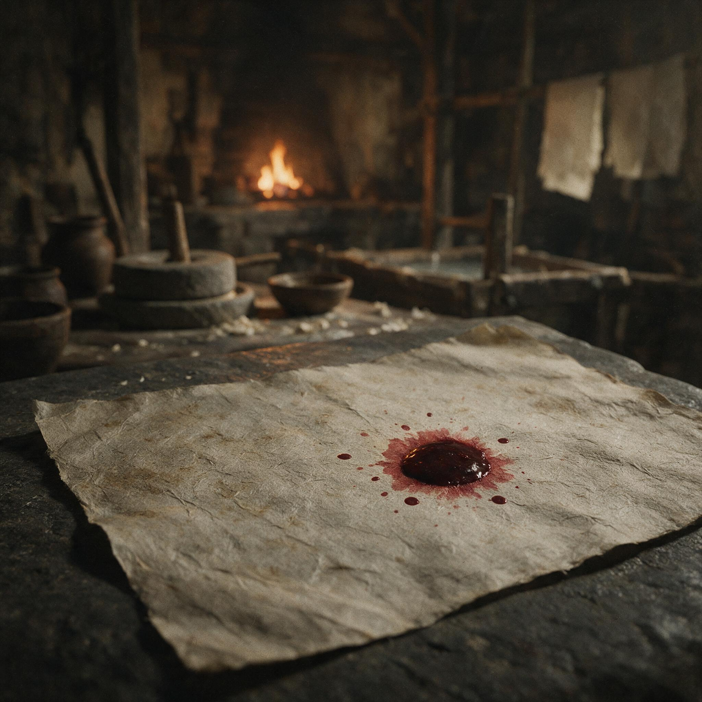

第 18 章
纸上的血
尚方署的炉火在永宁二年三月十七的夜里烧得比往常都旺。没有人下令添炭。是那些值夜的匠师自己动的手。他们从酉时起就听见北宫方向传来的钟声，先是零落几声，随即连绵成片，像有什么东西在宫墙之间来回撞击，要把那层薄薄的暮色彻底凿穿。尚方令蔡伦站在冶铸间的门口——他方才还在署事房的案前，对着少府那封书函的暗红封泥枯坐——此刻手里捏着一块刚淬过火的铁片，指尖还沾着水渍。他没有回头去看钟声的方向。他只是把那块铁片翻过来，借着炉口的火光辨认上面的纹路，然后把它搁回砧板上，对身边的丞说了一句：“这一炉的含碳量还要再低一些。”
丞愣了片刻。他的耳朵还挂在那些钟声上，人却不得不把视线收回来，落到眼前这块铁上。
钟声不止。蔡伦已经走向下一道工序。这并非无动于衷。尚方署距离北宫不过三道墙垣，那些钟声每一记都打在他的后背上，但他知道自己的手不能停。
他在这间工坊里度过了三十二年，从明帝永平末年一直站到如今，经历过三次皇权更替，两次太后临朝，无数官员的升降荣辱。每一次钟声响起，都有人在宫墙内的某处跪下去，也有人站起来。而他的位置，始终在这炉火与砧板之间。
这个位置不是靠站队站出来的，是靠他手里出来的东西——那些剑，那些弩，那些纸——一件一件叠起来的。他相信这一点。他甚至依赖这一点。
但钟声不理会他的相信。它们越过尚方署的屋顶，落进每一间工坊，每一口井，每一个匠人的耳朵里。
邓太后驾崩了。蔡伦在舂捣房外停下脚步。月光正照在那口石臼上，臼底还留着上午试验新浆料的残渣，泛着一层薄薄的灰白色光泽。他蹲下去，用手捻了一下那些浆渣，放到鼻尖闻了闻。发酵的程度还不够，得再等一天。
他站起来，对跟在身后的丞说：“明日卯时，把那批楮皮浆过了筛，不要耽搁。”丞张了张嘴，终于没能忍住：“令君，北宫那边——”
“我知道。”蔡伦打断他。语气不重，像在说一件与纸浆发酵同等要紧的事。“浆不能停。去吧。”

纸页上滴落血滴的象征画面
AI 生成插图，非史实影像。
东汉宦官的政治命运，与皇权更替的节奏紧密挂钩，这是宫廷政治的常态。宦官权力源于皇帝或摄政太后的私人信任，其兴衰往往随庇护者的存亡而骤起骤落。蔡伦历经明帝、章帝、和帝、殇帝，又在邓太后临朝时期位至长乐太仆、封龙亭侯，这条路的每一级台阶他都踩得稳当。
他的稳当不同于别人。别的宦官靠陪侍在侧、察言观色来维系恩宠，他靠的是尚方署每月呈递的那一沓勘验文移——上面列着当月出产的剑数、弩机数、纸张数，以及每一批成品的性能指标。这些数字是邓太后在帘后召见他时最先过目的东西，也是她用来向朝臣证明自己识人用人之明的证据。他把自己变成了一组不可替代的数字，一张不断累积的功勋清单。
据《后汉书·宦者列传》所记载，自古书籍文档皆用竹简，后有缣帛，但“缣贵而简重，并不便于人”。蔡伦“乃造意”，改用树皮、破布、麻头和鱼网等廉价之物造纸，大大降低了成本。汉和帝元兴元年，公元一百零五年，他将改进造纸术的成果报给皇帝，“帝善其能”，并把改进过的造纸技术向各地推广。汉安帝元初元年，公元一百一十四年，朝廷封蔡伦为龙亭侯，所以后来人们都把纸称为“蔡侯纸”。
封侯之后，他的名字就不再只是尚方署的一枚铜印，而是一个可以被书写、被传播、被记忆的符号。这个符号印在每一张纸上，便把他的功绩从宫墙之内推向了郡县乡里。造纸术的推广，使他名望超越宫廷。秘剑监作的权威，使他掌握核心工艺。封侯后的身份转换，使他从技术官僚变为显赫的贵族符号。这些成就共同制造了一种可见性——一种让所有人都看得见他的成功的可见性。
在皇权平稳时期，这种可见性是功勋与能力的证明，是他不靠出身、不靠谄媚、只靠一双从耒阳铁官家庭带出来的手在宫廷中站住脚的铁证。
但在皇权更迭之际，当北宫那边所有的钟声都指向同一个事实——邓太后死了，年轻的汉安帝刘祜即将亲政——这种可见性的质地就在一夜之间被翻了过来。它从政治资本逆转为清算标靶，其转化速度之快，甚至等不及那些钟声停歇。
蔡伦当然明白这一点。他在邓太后帘后站了十六年，他比任何人都清楚这面帘子一旦落下意味着什么。
他只是做出了一个选择，一个在后人看来或许天真、在他自己看来却顺理成章的选择：继续完成手头的工艺事务。他没有像其他宦官那样，在钟声尚未停歇时就派人去打听北宫的新主子身边多了哪些面孔，也没有连夜封好处、备好说辞，试图在权力的重新分配中抢到一个位置。他回到尚方署的冶铸间，继续校验那一批新弩的望山刻度。
这个选择的底色，并非无畏，也非愚钝，而是一种根植于他整个人生经验的误判。他认为工艺能力可以超越派系斗争。他认为那些剑、那些弩、那些纸在谁手里都好用，所以他这个人也应当在谁手里都好用。他把自己的价值等同于他制造出来的器物的价值，而器物是没有政治立场的——他在这条路上走得太远，走得太成功，以至于忘记了制造器物的人，本身也是可以被制造为罪证的材料。
郴州来的那个匠师在子夜时分找到了他。这个匠师姓郑，四十出头，在耒阳铁官做过十年，手上全是铁星灼出的疤痕。他是蔡伦六年前从家乡调进尚方署的，负责锻剑的最后一道淬火。
郑匠师在冶铸间门口站了许久，直到蔡伦回头看他，才低声说了句：“令君，外面有人在问您的去向。”蔡伦把手中的锉刀放下，问道：“什么人？”
郑匠师没有回答。他的沉默本身就是答案——不是少府的人，不是尚书台的人，是一些没有官署归属的、在宫墙夹道里出没的人。
蔡伦点了点头。他没有追问。他知道这种追问在今晚毫无意义。那些人在暗处，他在明处，而他之所以在明处，正是因为他用三十多年时间把自己的名字磨成了一盏灯。这盏灯从前有邓太后替他挡着风，现在挡风的人没了，灯却还在亮着。
他不能自己把它吹灭，那是技术上做不到的事——他的每一项成就都已经嵌入了整个尚方署的运作系统，从剑的淬火曲线到纸的纤维配比，从弩机望山的刻度误差范围到楮皮浆的发酵时间，每一个参数都刻着他的名字。即便他今晚就从这个院子里消失，他的名字仍然会印在每一张纸、每一柄剑上。他走回自己的公廨。
那间屋子不大，案上堆着本月尚未勘验的纸样，角落的铁架上搁着三柄待交的秘剑，墙上挂着一幅弩机构的分解图，是他在永初年间亲手绘制的，每一根线条都用墨极细，尺寸标注精确到分。他在这间屋子里度过了无数个夜晚，有时因配方失败而彻夜不眠，有时因新剑淬成而独坐自酌。
这间屋子是他的壳。他坐到案前，拿起笔，继续写那份尚未完成的勘验文移。笔尖落在纸上，发出极细的沙沙声，与远处尚未停歇的钟声形成一种奇异的对应——钟声向所有人宣告旧时代的结束，笔尖则在纸面上执行着他作为一个机构零件应尽的最后职责。他把这一批纸的耐拉强度数据一一核对完毕，在末尾签署了自己的名字和当日日期，然后把文移放在案角，等待明日送往少府。
那张纸在月光下泛着微弱的白光。那是他用楮皮和麻头混舂出来的纸，纤维均匀，质地柔韧，可以承载极细的墨迹而不洇不破。他盯着那张纸看了很久。
他在想，当年在耒阳铁官第一次看见父亲将熔化的铁水倒入范模时，他就懂得了一个道理：材料经过捶打和淬炼，便不再是原来的材料。铁可以变成剑，麻可以变成纸，人也可以变成另一个东西——一个被帝王赞赏、被天下知晓、被封侯赐爵的东西。但他没有想过的是，这个变成之后的东西，它的命运不再由锻造它的人决定。
第三天的上午，少府的书函终于到了。函文写得很简短，措辞却耐人寻味。少府没有直接质问蔡伦，而是要求尚方署将过去三年所有的出产记录、物料调配文移以及工匠轮值名录整理造册，限五日内呈交核实。函文的末尾有一行小字，写的是“以备新帝亲政后查验”。这一行字的笔迹与函文正文不同，是吏在抄写完毕后另加上去的，但钤印完整，无可置疑。
蔡伦拿着那封函文在院子里站了一刻钟。院子里那株老榆树已经抽了新叶，阳光透过叶隙落在函文上，把那个“新帝”二字照得格外醒目。他把函文折起来，放入袖中，然后转身走进工坊。
工坊里的一切运转如常——舂捣间的石臼一声接一声地响，晒纸间的湿纸一层一层地揭，冶铸间的风箱呼哧呼哧地拉——但这些声音在这一刻忽然有了另一层意味。它们不再只是生产流程的声响，而是一套完整的制度在发出自己的呼吸。这套制度由他亲手建立，每一道工序、每一个岗位、每一项标准，都渗透着他三十年来的经验和判断。
但制度是可以运转的，用谁管理都可以运转。那封函文要的不是他这个人，而是他手里握着的全部生产数据和工艺标准。他们要先接管制度，再决定如何处理制度里的人。
他召集了尚方署的六位令丞和主匠，在公廨里开了一次极短的会议。他把少府的函文放在案上，让每个人看了一遍，然后说：“五日内，所有文移整理造册，不得缺漏，不得涂改。”
有一个令丞小声问了句：“令君，那些未入册的——比如弩机的实测误差，还有那批试验失败的楮皮浆配方——”蔡伦抬起手，打断了他：“全部入册。”令丞顿了顿，又说：“可那些东西若是外传，旁人就知道了尚方署的底细。”
蔡伦看了他一眼。那一眼的深度，超过了一个上司对下属的指示，里面有一种极为冷静的自知之明。
他是技术官僚出身，他比任何人都清楚，在权力面前保留技术秘密是一种徒劳。那些秘密藏不住——它们刻在每一柄剑的刃纹里，抄在每一个匠师的脑子里，浸在每一池纸浆的纤维里。
他花了三十年的时间把这些秘密从自己的手传到了整个工坊，想让它们变成一个可以自行运转的系统。他成功了。正因为成功，他本人便不再是不可替代的那一环。他此刻唯一能做的，就是在交出这些东西之前，尽可能让交出去的东西完整、准确、无懈可击——像一个匠师在交出一件器物之前，用最后一遍打磨把器物的所有棱角都收束到位。
五天后，造册文移按期呈送少府。那一摞竹简和纸张加起来有四十斤重，由一个年长的令丞亲自押送。
蔡伦没有去。他留在冶铸间，继续为最后一批秘剑做淬火后的回火处理。他把剑刃插入炉中，盯着剑身从暗红转为橙黄，再转为那种介于黄白之间的微妙的色调——那是他三十年前在耒阳铁官第一次学会辨识的温度。
铁在这个温度下回火，可以同时获得硬度和韧性，既不会太脆而崩刃，也不会太软而卷口。他守着这一炉火，就像在守着一个已经无法适用于他自己的道理。
北宫那边的权力重组正在以极快的速度推进。汉安帝刘祜在邓太后去世后三日即下令清理长乐宫旧属，太后的亲信宦官中，有六人当日被收系，三人自尽，两人逃出宫城后被抓回。长乐太仆的属官们被一一传讯，问话的内容集中在邓太后时期的机密奏疏流转、内廷拨付的物资调配，以及与各郡国藩王之间的书信来往。蔡伦的名字出现在了第三天的传讯记录上。
这件事，蔡伦并不知情。但有人知情。郑匠师在黄昏时又来找他，这次脸色比上次更沉。他说：“令君，少府那边传出来的消息，您的名字被点了。”
蔡伦正蹲在晒纸间的池边，用手试纸浆的温度。他的手指浸在水里，停了一瞬，然后继续搅动。他说：“我知道会被点。”郑匠师急着又说：“还有人说，您在元兴元年上呈造纸术时，曾越过少府直奏先帝，此乃越级妄奏，有专宠弄权之嫌。”
这句话终于让蔡伦停手。他抽出手指，在衣摆上擦干水渍，慢慢站起来。不是因为这个指控的荒谬——在宫廷政治中，指控从来不需要与事实严密对应，只需要找到一个可以切入的制度接口。越级上奏在东汉官制中确实是程序违规，但当年造纸术的上报流程是先经过了少府审核的，相关文移都在少府档案库里有案可查。问题不在于此。
问题在于，这个指控说明了一件事：他们已经不再试图接管他的制度了，他们开始拆解他的功勋。把他的每一项成就翻一个面，找出其中的程序瑕疵、人事恩怨和利益关联，然后把它重新定义为罪状。造纸术可以不再是科技贡献，而是“越级妄奏”；秘剑监作可以不再是军工成就，而是“私蓄利器”；封侯可以不再是朝廷赏功，而是“依附后党”。
他把郑匠师叫到自己的公廨，关上门，倒了杯水递过去，然后坐到自己那张堆满了纸样和图纸的案前，用一种从未有过的语气问道：“你那年在耒阳铁官，见过我父亲冶铁吗？”郑匠师接过水，愣住了。他不明白令君为什么在这种时候问起几十年前的事。
蔡伦说下去：“我父亲冶铁有个习惯。每次出铁，他都会在铁水浇入范模之前，用勺子舀出一点，泼在旁边的石板上。那勺子铁水冷却之后，就是一个薄片，上面会显出纹路。他说，这些纹路告诉他这一炉铁是好是坏。如果纹路紊乱，说明炉温不对，或者矿石杂质太多，这炉铁就不能用来锻剑。”他顿了顿，“他就是靠这些纹路活了三十年，直到他的铁官被撤，炉子被拆。”
郑匠师张了张嘴，想说什么，却发现自己不知道该说什么。蔡伦没有再解释。
他拿起案上的勘验文移底稿，开始一页一页地整理。那些纸张在他手中发出干燥而轻微的声响，每一张都平整、光滑、厚薄均匀——这是他用了大半辈子驯服植物的纤维才得到的质感。
他把它们摞齐，压上镇纸，然后站起来，走到窗前。窗外的老榆树在夜风中轻轻摇晃，那些枝桠的影子落在地上，像是一张写满了字的纸被风吹得翻卷起来，但字迹太淡了，淡到无人能够辨认。
他在等待。不是等待拯救，而是等待那些他在三十多年间制造的可见性，一件一件地从政治资本逆转为清算理由的整个过程走完。这个过程并不快，但它极其确定。少府的查验在十天后有了初步结论：尚方署的出入库记录与长乐宫历年拨付物料的账册存在多处不一致，主要集中在永初五年至永宁元年的几批特殊调配——那些调配在程序上确实经过了相关官署的核验，但核验的官员如今或死或贬，没有人能够证明蔡伦在其中的上下交代完全合规。
问题的关键并不是这些物资去了哪里——它们都进了尚方署的工坊，变成了剑、弩和纸，每一笔都清清楚楚。问题的关键在于，在东汉的官僚体系中，程序的合法性依赖于经手人的身份连续性。一旦经手人的政治地位发生变化，他曾经合法执行过的程序，便可以被重新定性为“旧党专擅”。
这是一个制度的死结。蔡伦坐在自己的公廨里，面对着一面墙的图稿和记录，终于看清了这一点。
他的悲剧不在于站错了队，而在于他把自己变成了一个无法被新的权力网络收编的制度符号。
他封了侯，这个爵位进入了帝国爵制的正式序列；他的名字印在纸上，这些纸流入了从太学博士到郡县小吏的无数书案；
他的剑法标准成了尚方署的技术规范，任何新上任的尚方令都必须沿用这些规范，否则生产就会中断。他把自己从一个人变成了一套制度的代名词。
这套制度在邓太后手中是利器，但在汉安帝刘祜手中，却是一种必须被清除的旧朝烙印。要清除一个制度符号，最好的办法不是否定他的技术成就，那会损害制度本身的正当性。
最好的办法是否定他这个人——找出他的历史污点，把他的技术权威与人品缺陷捆绑在一起公之于众，让天下人觉得，纸是好纸，剑是好剑，但发明它们的那个人，是个该死的人。这就需要一个罪名。一个足够重大、牵连足够广泛、能够撬动整个宦官群体和朝臣派系的罪名。
少府的文移还在继续，尚书台的问询还在增加，但蔡伦知道，他们真正要找的东西还没有浮出水面。他们要找的，是一个能把他和某桩旧案绑在一起的关联点——那桩旧案必须涉及藩王、涉及宫廷机密、涉及废立之议，并且在他身上能找到不可辩驳的参与痕迹。
他明白他们会找到。因为在窦太后废立之议的时候，他确实在其中经手过某些文书。
那是三十多年前的事了，那时他刚入宫不久，还在掖庭令手下做一个小黄门，每日的职责就是把各处呈来的奏疏分类造册，再按级别传交给相应的宦官长。他经手过的文书中，有一批是关于废太子、立和帝的。
他当时没有权力参与决策，甚至没有资格阅读那些奏疏的全文，但他的名字作为登记造册的经手人，留在了相关档案的簿录上。这本是一件微不足道的事。但在三十二年后的今天，当新帝需要在一个旧臣身上找到可用的罪证时，这件微不足道的事就会被从故纸堆中翻出来，重新定义——“蔡伦参与窦后废立，构陷先帝”。而这个罪名一旦成立，便不是削爵罚铜可以了结的。它重则可以论死，轻则也是流放或贬为庶人，无论哪一种，龙亭侯和尚方令都将不复存在。
他坐在这间堆满了纸的公廨里，感受到了一种从未有过的东西。不是恐惧——他在宫廷里活了大半辈子，恐惧已经变成了生活中的常规感受，就像炉火前的灼热和淬火池边的蒸汽一样，习惯了就不觉得难受。
这种东西比恐惧更深，更冷，更像是他多年前在耒阳铁官亲眼见过的一幕：一柄锻了七火七淬的剑，在最后一轮淬火时因为水温差了一度，剑身从中间无声地裂开一道细细的纹。没有人能在淬火前发现这道纹。它藏在铁的晶格之间，就像宿命藏在时间之间。
那道纹，如今就横在他的命运里。他把手按在案上那摞纸的最上面一页，感受着纸面传递过来的微凉。这种微凉，是他赋予这张纸的。他选了楮皮，选了麻头，选了破布和渔网，把它们在石臼里舂成浆，在竹帘上滤成膜，在日头下晒成纸。他赋予这张纸以骨，让它从一堆腐烂的植物纤维变成了可以承载文字、传递法令、记录功过的载体。
如今这张纸上将写下他的罪名。纸是他造的，血也将染在其上。不是比喻——东汉的死刑判决，在廷尉署核验之后，会正式书写在纸上，由尚书台盖印，交付有司执行。
天将亮未亮时，他走出公廨，走到了晒纸间。晨光刚照上那些晾在竹竿上的湿纸，它们一列一列地排着，在微风中轻轻摆动，像是许多面白色的旗。他走到最近的一张纸前，伸手触了一下纸面。水汽从指尖渗入他的皮肤，凉而润，像许多年前他在耒阳第一次把手伸进父亲锻铁剩下来的淬火水桶里时的感觉。
那时他不知道什么是宫廷，什么是站队，什么是越级奏报，什么是制度符号。那时他只知道，水冷到骨头，铁便会硬。
如今水仍然冷，铁已经在他体内碎了。他把手从纸上收回来，发现自己的指尖上沾了一点尚未捣匀的麻纤维。他看着那根细细的纤维在晨光下泛出极淡的光泽，忽然觉得，也许他从未真正离开过耒阳。那些炉火、那些铁砧、那些石臼，始终就在他的骨头里，他只是把它们带进了宫墙，在里面搭了一座新的工坊。他以为这座工坊可以保护他，因为它是靠实打实的工艺建成的，不靠人言，不靠恩宠。
但他错了。这座工坊如今成了他的牢笼——因为它的出品太好，好到谁都不能忽视，好到必须用一场彻底的政治清算来让它与它的创造者割断开。
他回到公廨，铺开一张新纸，提笔蘸墨，开始写信。不是遗书。是给尚方署全体匠师的一份工艺交接文书，他将自己三十多年来积累的全部关键技术参数——剑的淬火温度与回火时间对照表、弩机望山刻度的校准流程、楮皮浆与麻头浆的最佳配比、不同的水质对纸浆发酵速度的影响——逐一记录在纸上。
他写得很慢，每一笔都压得很稳，像是在用笔尖替代手指，最后一次触摸这些与他相伴了大半辈子的数字和曲线。写完之后，他把这张纸压在案上那尊铁镇纸下面。铁镇纸是他入尚方署第三年亲手打的，用的是耒阳铁官祖传的“七火七水”的锻法。它的底面上刻着一行小字，是他在永元年间某夜独酌时用铁笔划上去的——
“铁骨在火，纸骨在水。”
这八个字，他当时写的时候是作为对自己半生技艺的总结。如今它们像八枚钉子，钉在纸上，也钉在他的命里。
他又看了一眼那尊铁镇纸，然后推开门，走到院子里。天已经全亮了。尚方署的匠师们陆续进坊，开始一天的劳作，锤声、臼声、水声此起彼伏，空气中弥漫着淬火的炭气和纸浆的清苦。一切运转如常。蔡伦站在老榆树下，看着这座他花了三十年搭建起来的制度在晨光中呼吸着。
他知道，它不再需要他了。他已经把自己彻底交付给了它——他的手艺变成了它的程序，他的判断变成了它的标准，他的经验变成了每一个匠师的条件反射。他成功了。他的成功让他可以被清除。
这一年的春天来得早。老榆树的枝叶已经繁密到遮住了大半个院子的天光。
蔡伦站在那片浓荫里，听见远处宫墙内传来新帝早朝的钟声。那声音穿过三重门，越过少府的屋顶和尚方署的墙，落在他的背上，像一只无形的手在推他。推他离开这棵树，离开这间工坊，离开这张他亲手铺开的巨大的纸。他没有动。
他只是抬起头，看了一眼那些从叶缝中漏下来的碎光，然后又低下眼，看了看自己的手。那双手上密布着烫痕和茧子，指甲缝里嵌着洗不掉的铁屑和纸浆渍。这双手曾经把铁打成剑，把麻舂成纸，把一项源自远古的粗糙工艺变成了一个帝国的书写工具。它们如今空空地垂在身体两侧，什么也没有握。但掌心里还有一滴露水。他攥起来。松开。掌心已空，只留下一小块潮湿的印痕，正在晨光下迅速蒸发。